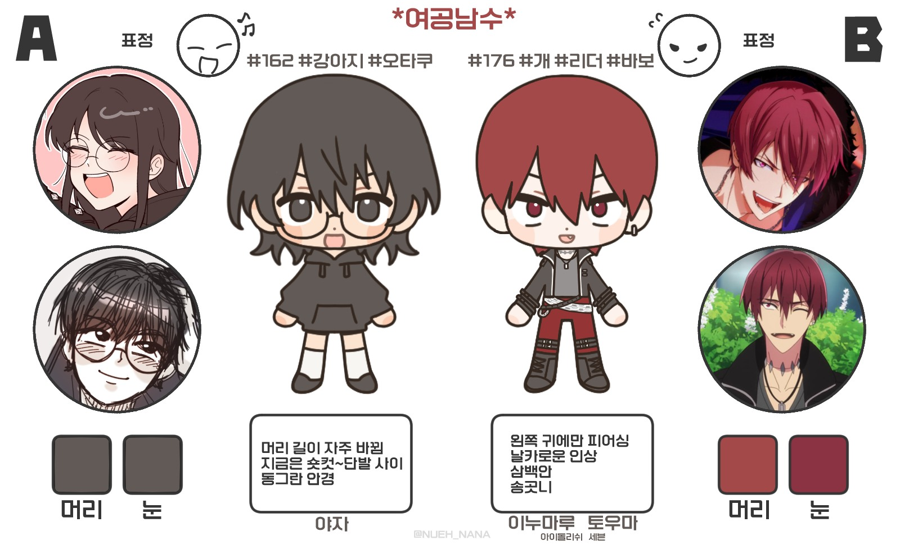
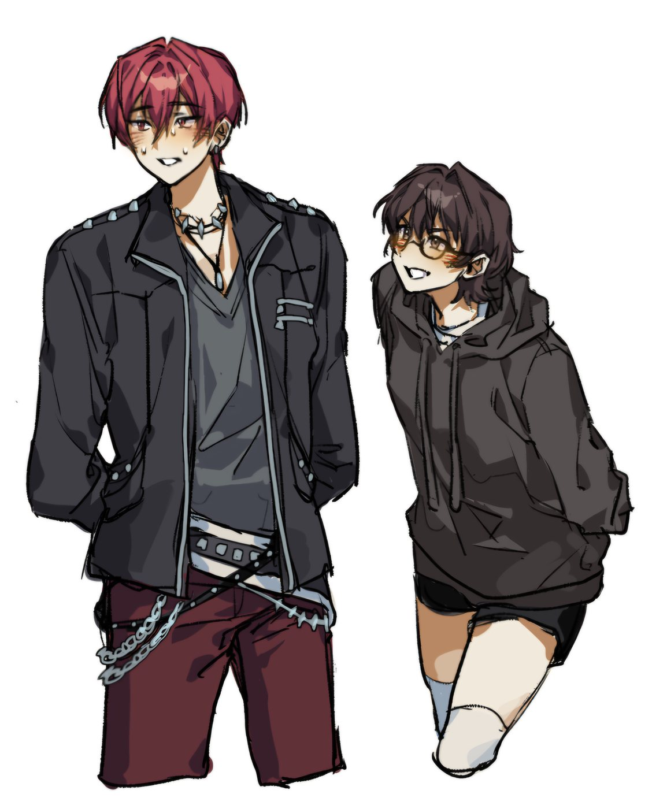
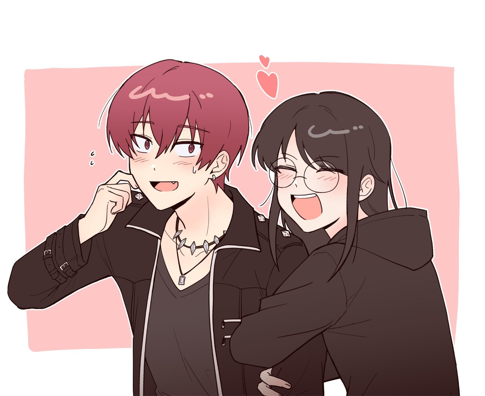
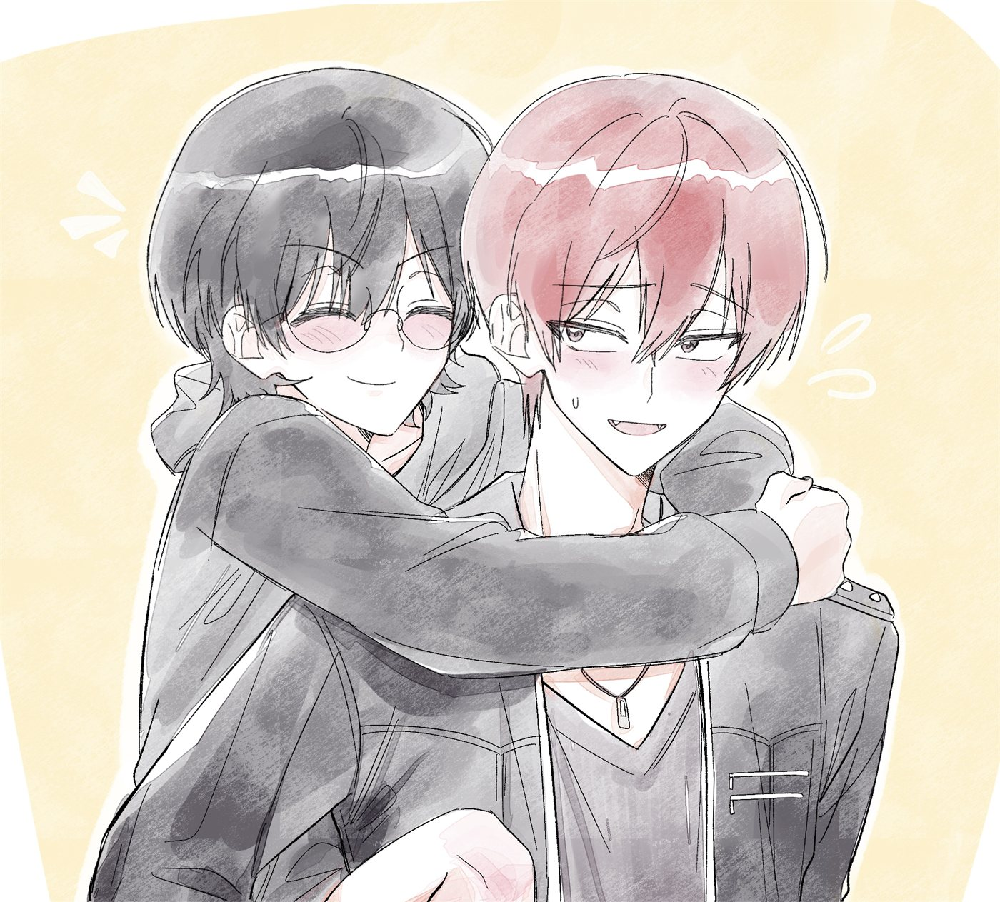
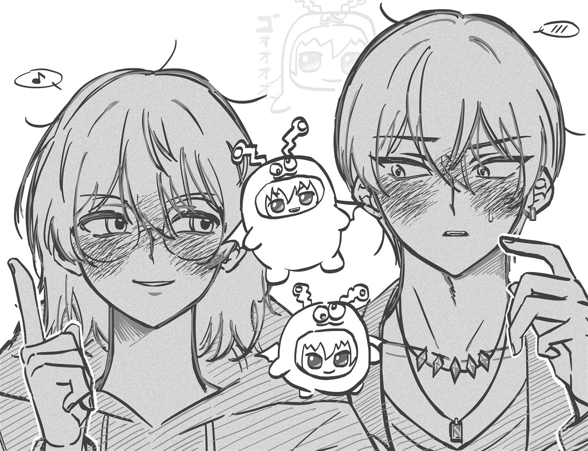
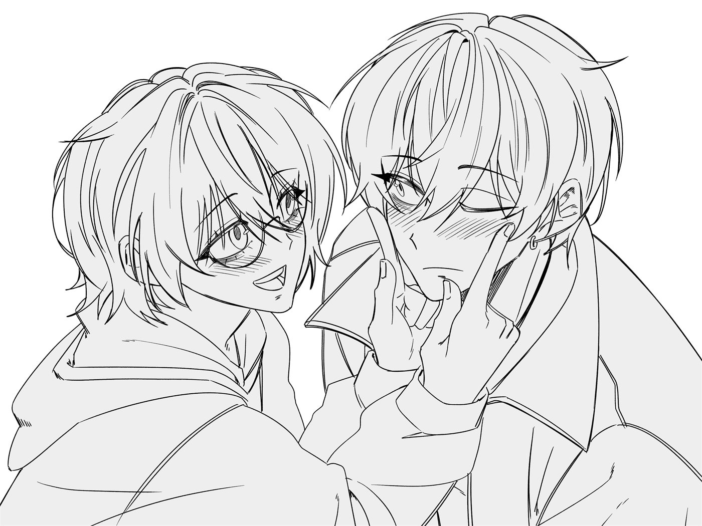
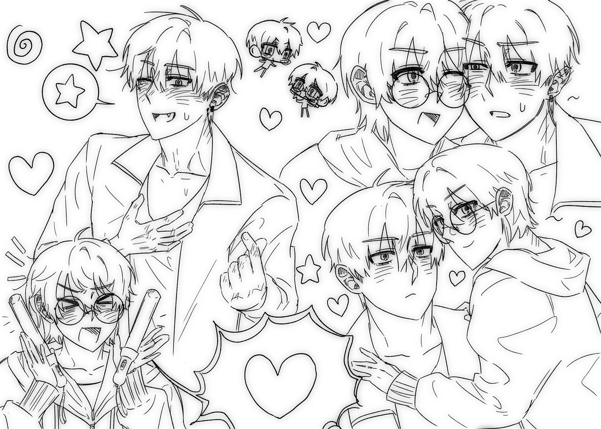
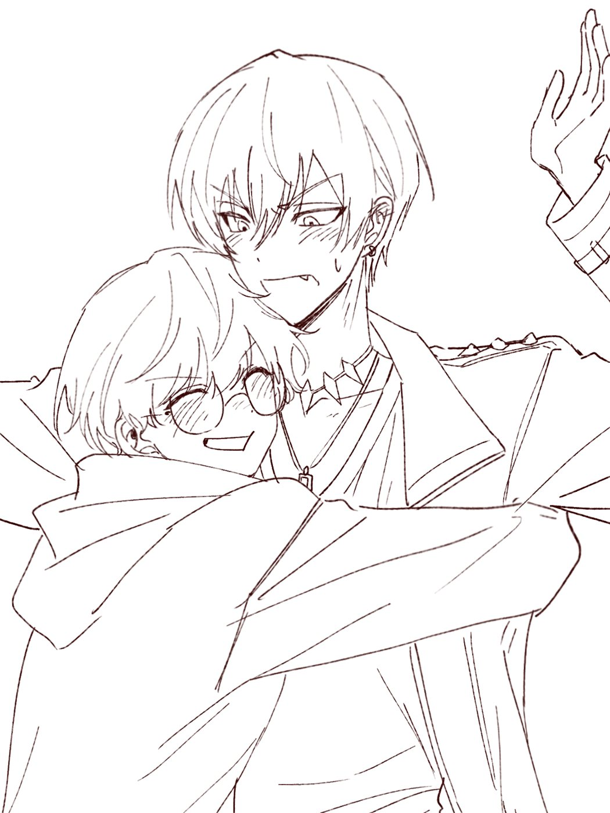

무대를 그만둔 연습생이자, 그 무대에 남은 사람의 팬. 직업은 마케팅.








야자는 무대를 포기한 사람이고,
토우마는 야자 때문에 무대에 선 사람이다.
같은 액터스스쿨 동기였다. 서로 챙겨주며 연습생 생활을 하다가, 야자는 무대에 서는 쪽보다 서포트하는 쪽이 자기와 맞는다고 느껴 그만뒀다. 토우마는 야자를 보고 동기부여를 받아 데뷔조에 들어갔다. 이 비대칭이 캐릭터의 엔진이다. 야자는 토우마를 볼 때마다 자기가 가지 않은 길을 보게 되고, 그래서 덕질이 과열되는 이유가 죄책감이 아니라 대리 성취가 된다. 돈을 통째로 쏟는 것도, 유사 쪽으로 가지 않는 것도 여기서 설명된다. 저 사람은 동경의 대상이 아니라 자기가 될 수도 있었던 사람이기 때문이다.
그를 무대에 남긴 것은 야자가 아니라 ŹOOL이다. 야자는 시작만 주고 그 자리에 없었고, 비어 있던 자리는 남이 채웠다. 야자가 준 것과 야자가 못 준 것이 이렇게 갈린다.
캐논 보강 — 토우마는 중학교 때 스카우트되어 액터스 스쿨에 들어갔고, 우등생이라 레슨료를 면제받았으며 고등학생 때 데뷔했다. 부활동은 한 번도 못 해봐서 그걸 동경한다. 그리고 「그 녀석들과는 원래 스쿨 때부터 친했으니까. 나한테는 노마드가 청춘인 걸지도」라고 말한다. 노마드 멤버들도 같은 스쿨 동기다. 따라서 야자가 잃은 것은 토우마의 그룹이 아니라 자기 동기들 전부였다.
토우마는 마케팅이 노마드를 죽였다고 믿는다.
야자의 직업이 마케팅이다.
노마드 시절 야자가 한 일 — 홍보, 생일 카페 주최, 홈마 후원, 조공, 여론전 — 은 전부 무보수 마케팅이었다. 야자는 노마드의 비공식 마케팅 담당이었고, 트리거의 실제 마케팅에 밀렸다. 그리고 노마드가 해체된 뒤 야자는 그 능력을 인정받아 대기업으로 스카웃된다. 실패한 대가로 승진한 셈이다. 오해로 풀릴 종류가 아니라 두 사람의 위치 자체가 어긋나 있는 것이라, 마지막까지 남는다.
야자는 진실을 말해줄 수 있는 유일한 사람이자, 그 말을 할 자격이 가장 없는 사람이다.
야자가 아는 것은 특별한 통찰이 아니다. 밖에 있던 사람이면 대체로 알았고, 야자는 안에 없었을 뿐이다. 그런데 오히려 그래서 말할 수 없다. 그 말을 하는 순간 밖에서 본 사람의 말이 되고, 토우마에게는 트리거 팬이 하는 말과 구분되지 않는다. 몇 년간 반박해온 바로 그 말을 이제 야자가 하게 되는 셈이다. 게다가 야자는 가장 먼저 그만둔 사람이다.
이 전제를 놓고 보면 노마드 시절의 여론전이 다시 읽힌다. 야자는 안티 쪽 말이 절반쯤 맞다는 걸 알면서 아니라고 싸웠다. 이기려고 싸운 것이 아니라 아직 끝나지 않았다고 우기기 위해 싸운 것이다. 그래서 계정 삭제가 지쳐서 접은 것이 아니라 항복이 된다.
토우마 쪽도 대칭이다. 「트리거 때문이다」는 「내 멤버들이 포기했다」를 말하지 않는 방식이다. 끝까지 포기하지 않은 것이 자기 혼자였다고 인정하는 쪽이 더 아프기 때문이다. 멤버들은 「이 이상 꼴사나운 모습 보여주는 것보다 좋은 추억으로 남긴 채 끝내고 싶다」며 떠났다. 자기들이 꼴사납다고 여긴 쪽이다. 마케팅을 탓하는 것은 토우마 혼자다.
그리고 그 믿음은 토우마가 스스로 도달한 결론이 아니다.
순서가 이렇게 되어 있다. 블화에서 진 직후 스태프가 먼저 말한다 — 「역시 야오토메 사무소, 완벽한 프로모션이었네.」 토우마가 그것을 받는다 — 「프로모션이라니, 그런 건 실력이 아니잖아!」 그리고 가장 무너진 밤, 처음 보는 남자가 다가와 정확히 이렇게 말한다. 「이대로는 분하지? 왜냐하면, 넌 아무것도 잘못하지 않았는데!」 토우마가 답한다. 「그래……. 난 틀리지 않았어…….」 그 남자가 츠쿠모 료다.
료는 하루카에게도 같은 말을 쓴다 — 「넌 나쁘지 않아, 나쁜 건 저 녀석들이야.」 무너진 사람에게 면죄부를 쥐여주고 데려가는 것이 그의 수법이고, 혼잣말에서 본심이 나온다. 「너희는 변하지 않아. ……변하지 않아도 돼.」 고칠 생각이 애초에 없다. 안 변하는 것이 도구의 조건이기 때문이다.
그래서 야자가 진실을 말하는 것은 오해를 바로잡는 일이 아니다. 토우마를 서 있게 하는 유일한 기둥을 빼는 일이다. 대신 세울 것이 없으면 뺄 수 없다.
야자는 바뀌기 전의 토우마를 아는 사람이다.
ŹOOL 데뷔 직후, 거리의 팬이 이렇게 말한다. 「토우마 군 멋있어! 노마드? 헤에, 몰랐어. 전혀 기억 안 나!」 다만 이것은 노마드가 잊혔다는 뜻이 아니다. 노마드는 블오화 전년도 우승 그룹이고, 소고도 미나미도 그 음악을 안다. 한 번도 몰랐던 것을 두고는 「기억 안 나」라고 하지 않는다 — 알아볼 수 없을 만큼 달라졌다는 뜻이다. 락 밴드의 보컬에서 도발적인 안티히어로로, 「두 번 다시 진지하게 노래하지 않아」를 선언하며 갈아입은 얼굴이다.
새 팬들이 사랑하는 것은 그 새 얼굴이다. 야자만이 그 아래에 누가 있었는지 안다. 그리고 야자가 사랑한 것은 바뀌기 전의 토우마인데, 지금 응원하고 있는 것은 바뀐 토우마다. 이 자리는 캐논이 회수할 수 없다.
야자의 응원은 도달하지 않았다.
토우마는 그 시절을 이렇게 말한다. 「응원받는 녀석이 부러웠어. 그 성원 중 하나라도, 자신을 향하길 바랐어.」 그런데 야자는 그 시절 내내 응원을 주고 있었다 — 홍보, 생일 카페, 조공, 몇 년간의 여론전.
다만 토우마의 기억은 무지가 아니라 죄책감이다. 라디오에서 노마드 시절부터의 팬이 보낸 사연을 읽다가 그는 울먹이며 이렇게 답한다. 「그렇게 생각해주는 사람을 소중히 여기지 못했을 때가 있었어.」 아무도 없었다고 믿는 것이 아니라, 있었는데 자기가 놓쳤다고 여긴다.
그래서 「Y모씨」가 밝혀질 때 토우마가 알게 되는 것은 소꿉친구의 정체가 아니다. 내가 소중히 하지 못한 사람 중 하나가 소꿉친구였고, 나 대신 몇 년을 싸우다 항복했다는 것이다.
그리고 캐논은 이런 팬 앞에서 토우마가 어떻게 하는지 이미 보여줬다. 분노하지 않는다. 감사하고 운다. 야자가 각오하고 있던 것은 거절인데, 실제로 돌아오는 것은 환대다.
약이었다가 독이 된 팬.
쿠죠 타카마사가 하루카에게 경고한 말이 야자에게 이름을 붙여준다. 관객이 약일 때는 괜찮지만, 관객이 독이 되었을 때 아이돌은 죽는다고. 야자의 무보수 마케팅이 약이었고, 몇 년간의 여론전이 독이었다.
그런데 미나미가 반대편을 준다. 일방적인 기대나 요구나 욕망은 독처럼 괴로운 것이지만, 그것조차 없으면 사람들은 지나가 버린다고. 바라는 것이 있는 사람들만이 발을 멈추고 되돌아와 준다고.
야자가 독이 된 것은 떠나지 않았기 때문이다.
야자는 팬 활동을 완전히 끊고 일에 파묻힌다. 노마드가 사라진 그 시기에, 야자는 커리어에서 올라간다.
우연히 본 직캠 하나가 계기. 연애가 아니라 덕질로 시작했고, 유사 쪽으로는 끝내 가지 않았다.
대기업 연봉에, 업계에서 일하느라 아이돌을 파지 않아 쌓인 돈까지. 전부 토우마에게 들어갔다.
생일 카페 주최, 홈마 후원, 조공, 홍보. 팬으로서 가능한 것을 전부 해서 팬덤 내 「Y모씨」가 됐다.
연락이 끊긴 것이 부담스럽고, 네임드가 아는 사이라는 게 알려지면 팬덤이 뒤집히기 때문. 당첨돼도 모자와 마스크로 얼굴을 가리고 사인만 받고 나온다. 토우마는 그 사람을 「가끔 오는 사람」 정도로만 인식하고 있다.
트리거 데뷔로 팬덤이 갈라지자 끝까지 남을 각오로 버텼다. 사이버불링을 감수하면서. 안티 쪽 말이 절반쯤 맞다는 것을 알면서도.
해체와 동시에 계정을 지웠다. 지쳐서 접은 것이 아니라 자기가 틀렸다고 인정하는 행위였다.
데뷔일에 계정을 다시 연다. 노마드 때 진 싸움을 되찾으러 온 것이라, 그동안의 여론전 기록을 통째로 공개하며 돌아온다.
하루 종일 서치를 돌며 ŹOOL 홍보를 사실상 전담한다. 노마드 때 하던 일을 그대로 다시 하는 것이고, 이번에는 상대가 안티 여론이다.
노마드 때는 얼굴을 가리고 다녔다. 팬싸에 제 얼굴로 나가기 시작하는 것 자체가 야자의 회복 지표다. 아래 「관계」의 모든 일은 그 이후에 벌어진다.
ŹOOL 마케팅 회의에 들어가지 못한다. 자기가 가장 잘하는 일을 옆에서 남이 하는 것을 지켜봐야 하는 위치다. 잘 굴러가면 안심되고, 그렇지 않으면 견디기 힘들어한다.
회사에서는 ŹOOL 이야기를 꺼내지 않는다. 가장 열심인 팬이 사내에서는 가장 말이 없다. 다만 숨겨지는 것은 건물 안에서뿐이다 — 팬싸도 촬영 현장도 전부 따라다니기 때문에 바깥에서는 진작 알려져 있다. 야자는 그 두 쪽이 이어질 일은 없다고 믿고 있다.
낮에는 담당 아이돌을 직업으로, 퇴근 후에는 ŹOOL을 개인 자격으로. 같은 기술을 두 번 쓴다. 월급을 주는 곳과 그 월급이 쓰이는 곳이 같은 회사다.
담당도 아니면서 쉬는 시간마다 토우마를 찾아다녀 사내에 소문이 돌았다. 검은 머리에 안경을 쓴 사람이 토우마의 행방을 물으면 대답하지 말라는 식으로.
아래는 앞의 설정에 순서를 붙인 구성안이다. 발각 순서는 바꿔도 나머지 설정이 무너지지 않는다.
계정을 다시 열고, ŹOOL 초기 안티 여론과 전면전에 들어간다. 야자의 여론전 경험이 실제로 필요해지는 구간이다.
인사이동 같은 장치 없이도, 같은 건물이면 언젠가 마주친다. 공백기의 두 번째 스침이고, 이번에는 토우마가 먼저 알아본다.
야자는 매년 토우마의 생일 카페를 직접 주최해왔다. 어느 해, 토우마가 그것이 야자가 연 자리인 줄 모르고 찾아온다. 그런데 이제 야자의 얼굴을 안다. 주최자가 「Y모씨」라는 말이 나오는 순간 소꿉친구 · 마케팅부 직원 · 노마드 시절의 그 계정이 한 사람으로 합쳐진다.
소꿉친구도 팬도 아닌 자리를 새로 만드는 구간. 토우마의 무자각 짝사랑이 자각되는 지점이 여기다.
아래는 전부 ŹOOL 데뷔 이후, 야자가 얼굴을 가리지 않고 팬싸에 나오기 시작한 뒤의 일이다. 노마드 시절의 야자는 이 자리에 없었다.